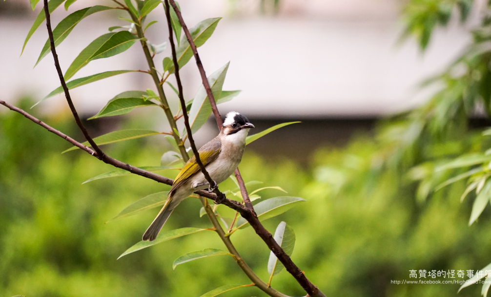

白頭翁 (Chinese bulbul)
又名白頭鶴。 以果實、昆蟲為主食，無法消化小米、穀類。 平均壽命8-10年。
外觀
白頭鵯體長約17到22公分，額至頭頂純黑色而富有光澤，兩眼上方至後枕白色，形成一白色枕環。耳羽後部有一白斑， 此白環與白斑在黑色的頭部均極為醒目，老鳥的枕羽(後頭部)更潔白，所以又叫「白頭翁」。
棲地
白頭翁和麻雀、綠繡眼合稱「城市三寶」，常成群出現在平原區灌木叢、丘陵樹林地帶，以及校園、公園、庭院、行道中的各種高高的電線與樹上。
食性
以果實的項目和攝食方式而言，選擇果實入手獲取時較容易，通常先啄果實軟，大量昆蟲和蜘蛛也是牠們重要的食，據觀察結果。